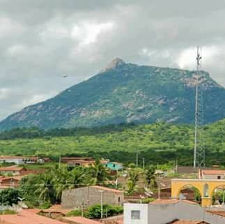
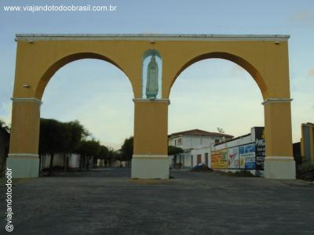
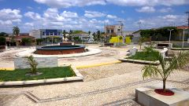

Informações técnicas sobre relevo, população, IDH etc.
| INFORMAÇÕES | |
|---|---|
| Municípios limítrofes | Catunda, Crateús, Hidrolândia, Independência, Ipaporanga, Monsenhor Tabosa e Nova Russas. |
| Fundação | 4 de outubro de 1854 (166 anos) |
| Área total | 1 961,634 km² |
| Clima | semiárido |
| IDH | 0,62 — médio |
| PIB | R$ 89 319,440 mil |
| INFORMAÇÕES TERRITORIAIS | |
|---|---|
| Número de habitantes | 26 251 habitantes |
| Superfície de Tamboril |
200 077 hectares
2000,77 km² (772,50 sq mi) |
| Densidade populacional | 13,1 ha./km² |
| Altitude de Tamboril | 317 metros de altitude |
| Coordenadas geográficas decimais |
Latitude:
-4.83222
Longitude: -40.3215 |
| Coordenadas geográficas sexagesimais | Latitude: 4° 49' 56'' Sul , Longitude: 40° 19' 17'' Oeste |
| INFORMAÇÕES DO MUNICÍPIO | |
|---|---|
| Endereço da Prefeitura Municipal de Tamboril |
Tamboril
Prefeitura de Tamboril
Avenida Franklin Cavalcante, 40 - Bairro Monte Castelo Tamboril - CE, 63750-000 Brasil |
| Telefone da prefeitura |
(88) 3617-1140
Internacional: +55 88 3617-1140 |
| Fax |
(88) 3617-1140
Internacional: +55 88 3617-1140 |
| Endereço electrónicoda prefeitura |
Não disponível
|
| Site oficial do município | tamboril.ce.gov.br |
| INFORMAÇÕES DO ADMINISTRATIVAS | ||
|---|---|---|
| Prefeito de Tamboril | LUIZ MARCELO MOTA LEITE | |
| Partido politico | PDT | |
| INFORMAÇÕES DE TRANSPORTE | |
|---|---|
| Transporte urbano disponível | - |
| Aeroporto |
Aeroporto de Sobral 128.1 km
Aeroporto Pinto Martins
221.6 km
Aeroporto Internacional Pinto Martin
230.8 km
|
| INFORMAÇÕES DE DISTÂNCIA A OUTRAS CIDADES | ||
|---|---|---|
| São Paulo : 2191 km | Rio de Janeiro : 2036 km | Brasília : 1476 km |
| Salvador : 927 km | Curitiba : 2484 km | Belo Horizonte : 1714 km |
| Manaus : 2197 km | Fortaleza : 233 km mais perto | Recife : 700 km |
| Goiânia : 1640 km | Belém : 984 km | Porto Alegre : 3030 km |
| Guarulhos : 2170 km | Campinas : 2139 km | São Luís : 511 km |
| Distância calculada em linha reta! | ||
Conheça mais sobre a história de Tamboril.
Tamboril de localidade, se transformou, em 1842, um distrito do município de Ipu, e elevado, em 1854, à categoria de município (desmembrado de Ipu). Em 1882 foi criado o distrito Arraial da Telha, que foi o primeiro distrito de Tamboril. Em 1931 o distrito foi extinto e engolido por Santa Quitéria, em plena expansão territorial. Em 1933, novamente se emancipa, e novamente com o distrito de Arraial da Telha. Pouco depois surgem mais 3 distritos: Lagonhias, Pinheiros, e Timbaúba. Em 1936, Arraial da Telha foi rebaixada a simples localidade, e foi elevado a distrito Monsenhor Tarbosa. Em 1938 dois distritos mudam seu nome: Lagoinha, passaria a se chamar Pageú, e Timbaúba, passaria a se chamar Holanda. Em 1943 o distrito de Pagéu (ex-Lagoinha) muda novamente seu nome, agora para Curatis, e Pinheiro muda o nome para Sucesso. Em 1951 Monsenhor Tabosa se emancipa de Tamboril. Em 1958 é criado o distrito de Oliveira. Em 1963 o distrito de Sucesso também se emancipa de Tamboril, e são criados mais dois novos distritos: Boa Esperança e Carvalho. Em 1965, Sucesso volta a ser distrito de Tamboril.

Saiba mais sobre os melhores lugares e o que fazer em Tamboril.
-Em homenagem à N.Sra.de Fátima centro da cidade
-Inaugurada em 1990, ainda com aspecto do passado hoje reformada e modernizada.

Rio Acaraú
-Riachos:
Arara, Barbosa, Morcego , da Onça e Olho D’água.
Veja como chegar nos melhores pontos de Tamboril.